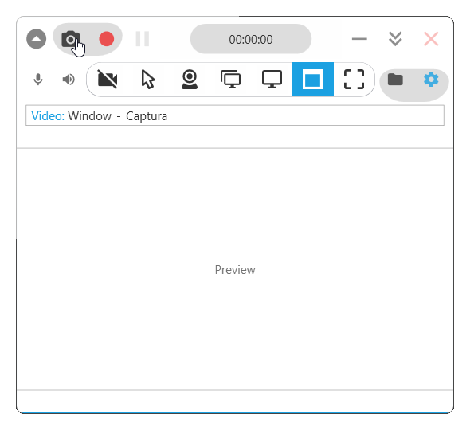
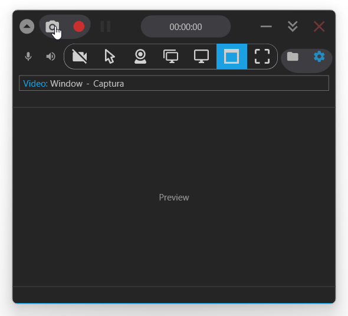
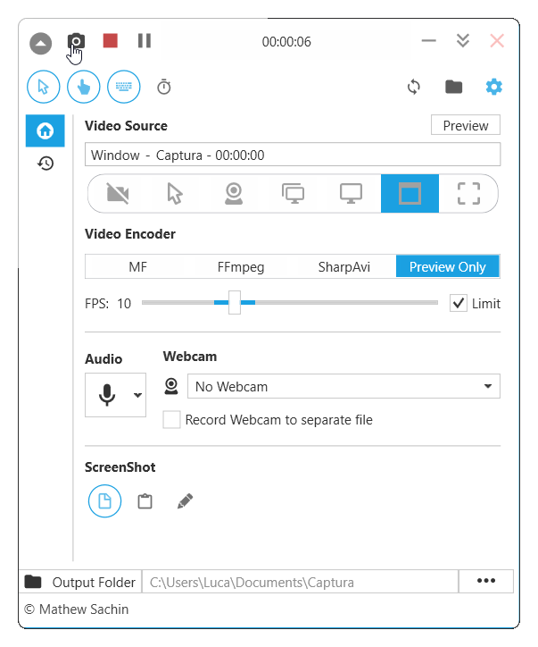
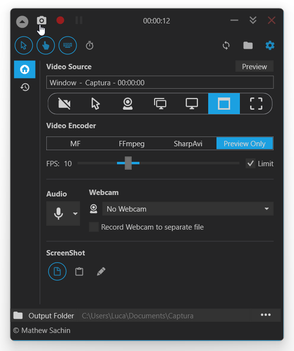

Powerful Screen Recording Made Simple
Capture screen, webcam, audio, cursor, mouse clicks and keystrokes with OSR Studio - the modern, lightweight screen recording software for Windows.


Key Features
Screen Recording
Record your screen in multiple formats including AVI, GIF, and MP4 with hardware acceleration support.
Screenshots
Capture specific regions, screens, or windows with mouse cursor and click indicators.
Audio Recording
Mix audio from microphone and speaker output for professional recordings.
WebCam Support
Capture from your webcam alongside screen recording for video tutorials and streams.
Keystroke Capture
Record mouse clicks and keystrokes for detailed tutorials and demonstrations.
Hardware Encoding
AMD AMF and other hardware encoding support for efficient, high-quality recordings.
Windows Graphics Capture
Modern WGC API support for reliable screen recording on Windows 10 1903+.
Multi-Language
Available in multiple languages with configurable hotkeys and command-line support.
Download OSR Studio
Prefer the Classic UI?
The classic interface is still available for users who prefer the traditional layout.


For building from source or documentation, visit the GitHub repository
About This Project
OSR Studio is a complete rebrand of the excellent screen recording software originally known as Captura. This project builds upon the foundation laid by its predecessors while establishing a fresh identity for better visibility and continued development.
Recent Enhancements
- ✅ Fixed FFmpeg download window initialization issue
- ✅ Updated FFmpeg download mirrors for reliability
- ✅ Improved build and release workflows
- ✅ Added AMD AMF hardware encoding support
- ✅ Implemented Windows Graphics Capture (WGC) for Windows 10 1903+
- ✅ Complete rebrand for better project visibility
Credits
Huge thanks to:
- Mathew Sachin - Original creator of Captura
- Mr. Chip (mrchipset) - Maintainer of nCaptura fork
- Cursor & Claude - AI tools that made these enhancements possible